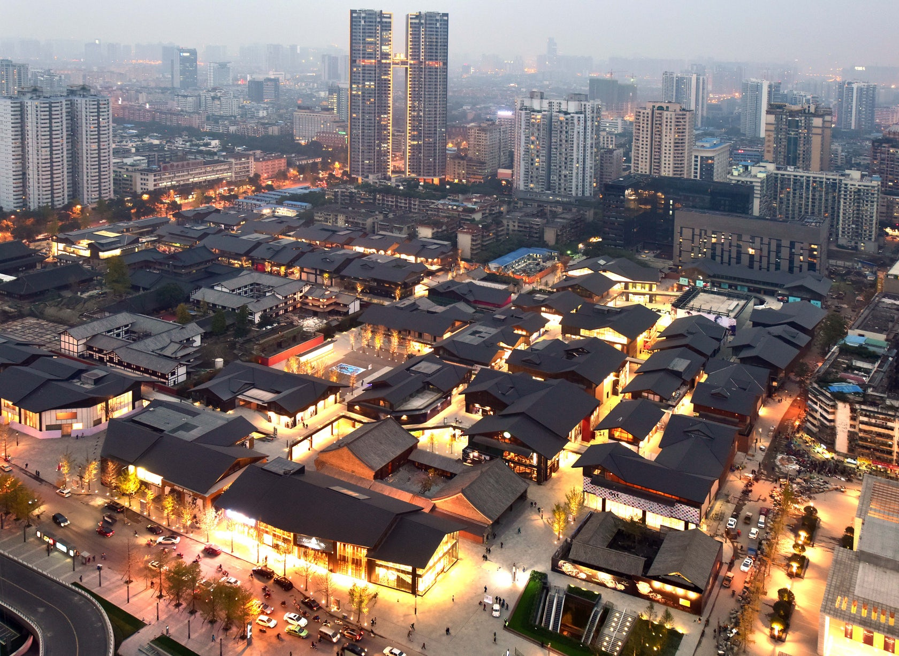
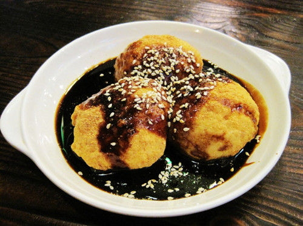
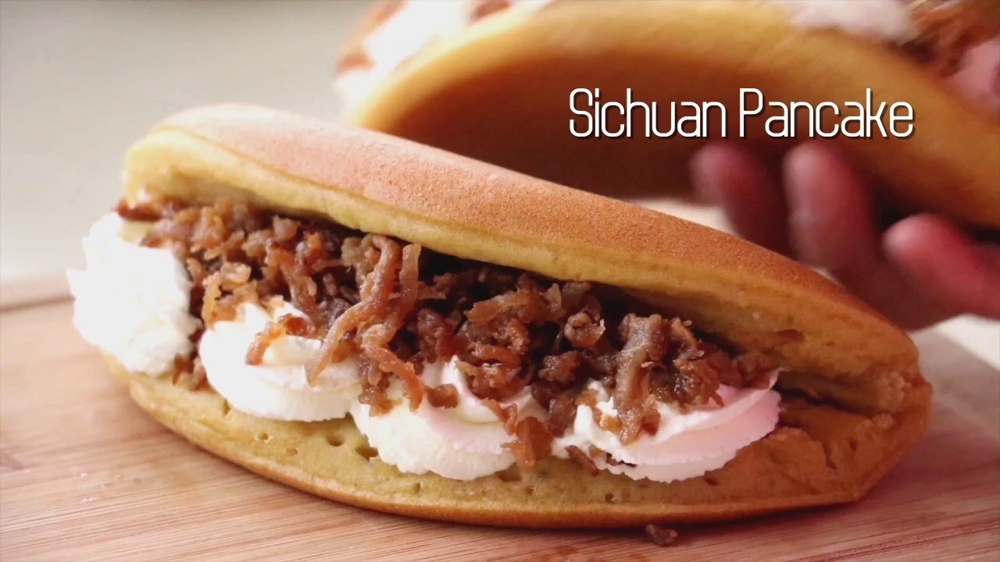
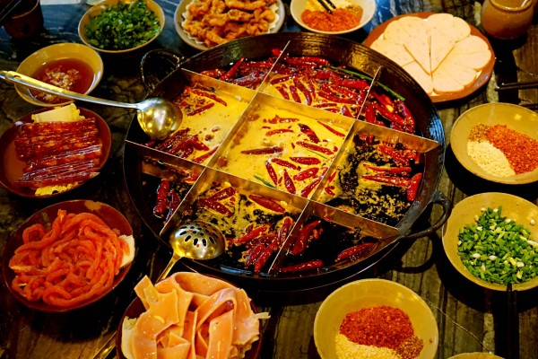

Les places de Chengdu
- Panda station
- Oceanic Taikoo Li
- Kuanzhai Alley

Le Centre de recherche sur le Panda géant de Chengdu est un organisme à but non lucratif consacré à l'étude et la reproduction en captivité du panda géant. Il est situé à Chengdu, dans la province du Sichuan, en Chine. Le centre a été fondé en 1987. Il démarra avec six pandas. Wikipédia

Chengdu Oceanic Taikoo Li est un centre commercial ouvert en blocs de faible densité. De nombreuses boutiques de mode internationales, des mets gastronomiques et des boissons raffinées, des marques culturelles apportent une double expérience de vie: jeu rapide et vie lente.

Kuanzhai Alley est la seule ancienne rue de la dynastie Qing à Chengdu, composée de trois rues urbaines: la grande allée, l’allée étroite et l’allée des puits et la cour commune qui les sépare.
Les nourritures de Chengdu
-

- Sandapao
- Sichuan Pancake
- Fondue Chinoise
Les trois canons sont de célèbres snacks traditionnels dans le Sichuan. Ils sont principalement composés de riz gluant. En raison des trois canons, tels que les "projectiles", lorsqu’on lance des boulettes de riz gluant, les sons de "Quand, quand, quand" sont divisés en "canons de fer". "Artillerie", "canons", d'où le nom "trois canons".

Le gâteau de cuisson aux œufs, une célèbre collation traditionnelle à Chengdu, dans le Sichuan, a commencé sous la dynastie Qing. Au cours des trois années de Qing Daoguang, le vieil homme du professeur surnommé à côté de l'Académie Shishi de la rue Wenmiao à Chengdu (maintenant Han Weng Shishi, collège de Chengdu Shishi) a été inspiré par les enfants pour faire «Tante», en utilisant des œufs, de la farine fermentée et une quantité appropriée de sucre brun. Bien mélanger et cuire au four dans une casserole. Parce qu'il a un goût vif et rafraîchissant, le goût est particulièrement bon et il devient un nom du Sichuan.

Le hot pot est le préféré des habitants de Chengdu. Le magasin de rue le plus populaire est son restaurant.